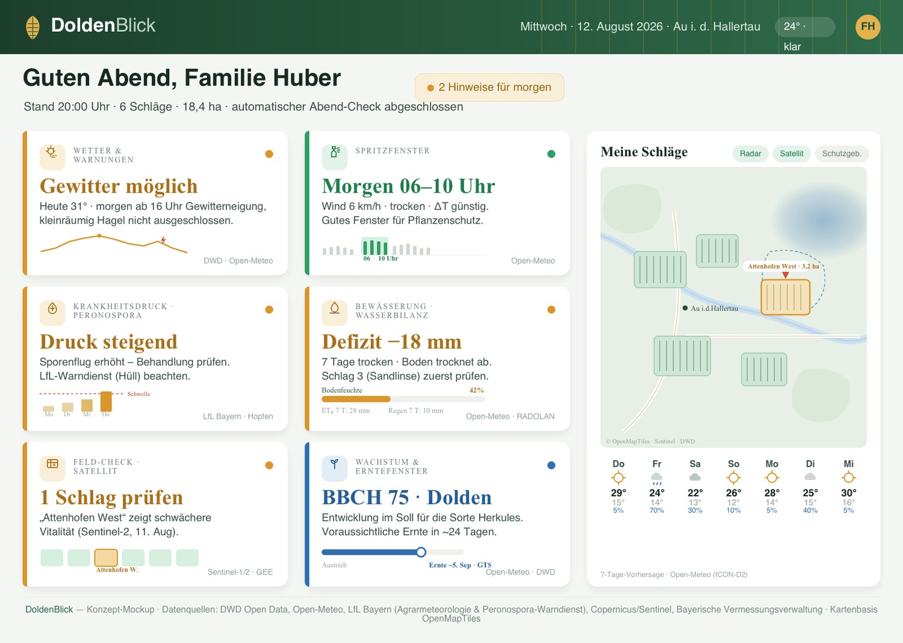
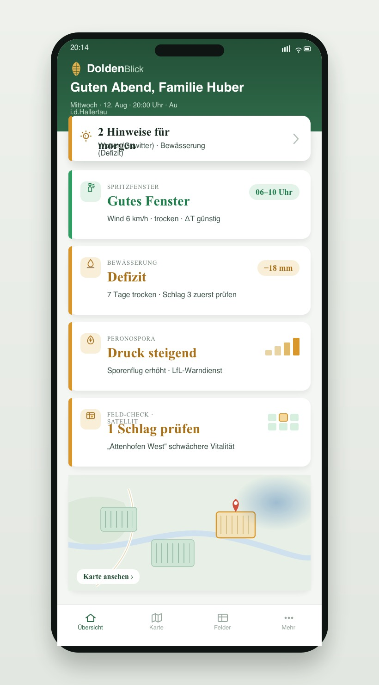
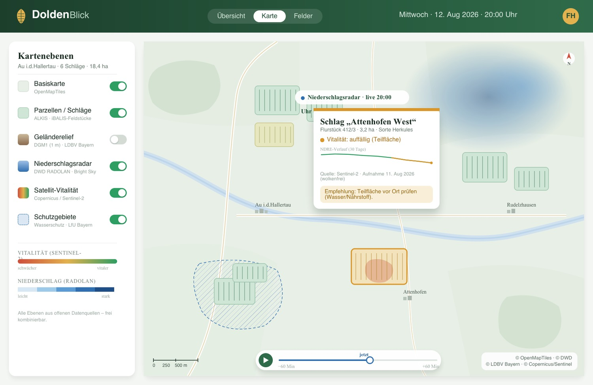
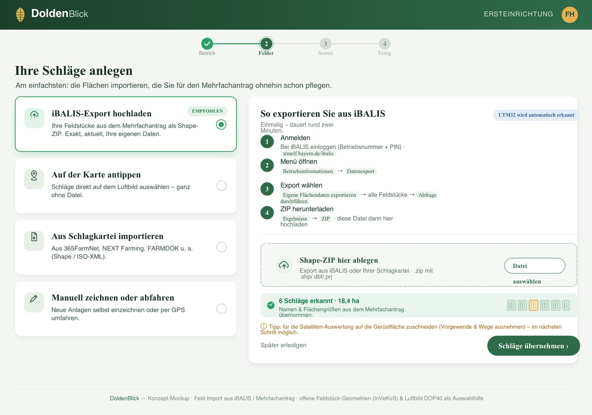

| RegionHallertau (Bayern) – größtes Hopfenanbaugebiet der Welt, rund 17.000 ha | DatengrundlageDWD, Open-Meteo, LfL Bayern, Copernicus/Sentinel, Bayer. Vermessungsverwaltung | KartenbasisOpenMapTiles / MapLibre, ergänzt um offene Fachebenen |
Ziel ist ein webbasiertes Dashboard, das einem Hopfenbetrieb in der Hallertau jeden Abend in einfacher Sprache zeigt, was heute passiert ist und was morgen ansteht. Die Leitidee ist bewusst kein „Kartenprogramm mit vielen Ebenen“, sondern ein abendliches Briefing: oben stehen wenige Statuskarten nach dem Ampelprinzip mit je einer konkreten Empfehlung, darunter liegt die Karte zur Verortung.
Die Studie fasst drei Bausteine zusammen: (1) welche Datenebenen aus Google Earth Engine (GEE) bzw. Satellitendaten im Hopfenbau sinnvoll sind – und wo ihre Grenzen liegen; (2) den Aufbau des Abend-Dashboards mit sechs Entscheidungskarten; (3) einen Stapel offener Datenquellen (Open-Meteo, DWD über Bright Sky, LfL Bayern, Sentinel, bayerische Geobasisdaten), der den Betrieb ohne teure Lizenzen versorgt – kommerziell über Open-Meteos günstige Bezahlstufe (~30–100 €/Monat) bzw. Selbst-Hosting, DWD- und Geobasisdaten frei mit Namensnennung, die LfL-Weiterverbreitung vorab abzustimmen.
Die Hallertau ist mit rund 17.000 ha das größte zusammenhängende Hopfenanbaugebiet der Welt. Die Betriebe sind überwiegend Familienbetriebe; die mittlere Hopfenfläche liegt grob bei 13–20 ha (2020 rund 19,5 ha), die Spanne einzelner Betriebe reicht von etwa 5 bis über 100 ha, meist auf mehrere Schläge rund um die Heimatgemeinde verteilt. Der Hopfen wächst an rund 7 m hohen Gerüsten; geerntet wird ab Ende August über etwa drei Wochen (Größenordnung 1 ha pro Tag). Der Wasserbedarf in der Hauptwachstumszeit liegt bei rund 100 mm pro Monat (Juni–August). Verbreitete Sorten sind u. a. Herkules, Hallertau Mittelfrüh und Perle.
Das größte Ertragsrisiko sind Trockenheit und Hitze (ausgeprägt etwa 2015, 2018, 2022). Besonders sensibel ist die Doldenentwicklung im Juli/August: Sie entscheidet über Ertrag und über die Alpha-Säure-Qualität. Hinzu kommen Pilzkrankheiten – allen voran die Peronospora (Falscher Mehltau) – sowie Wetterereignisse wie Spätfrost, Sturm und Hagel. Daraus ergeben sich die Themen, die ein Abend-Dashboard abdecken sollte: Wetter/Warnungen, Spritzfenster, Krankheitsdruck, Bewässerung, Bestandsauffälligkeiten und Entwicklungsstand.
Für Düngung, Pflanzenschutz und Bewässerung gelten u. a.:
Für Trockenstress und Hitze eignen sich Klimareanalysen wie ERA5-Land (täglich, ~9 km), thermische Landsat-Daten (Oberflächentemperatur) sowie Trockenheitsindizes (SPI/SPEI). Wichtig: Der populäre Verdunstungsdienst OpenET ist auf die USA beschränkt und steht für Europa nicht zur Verfügung. Europäische Verdunstungsprodukte (MODIS MOD16, PML_V2) liegen bei rund 500 m Auflösung – ein Pixel entspricht damit grob einem ganzen Betrieb und ist für die schlagbezogene Bewässerungssteuerung zu grob.
Für die Bestandsentwicklung ist Sentinel-2 die Basis. Statt NDVI empfiehlt sich NDRE (Red-Edge): Es sättigt in dichten Beständen weniger und differenziert dort besser. Zur Wolkenmaskierung eignet sich „Cloud Score+“. Da Bayern wolkenreich ist, ist Sentinel-1 (Radar, wetterunabhängig) eine wertvolle Ergänzung, um auch bei Bewölkung Zeitreihen zu erhalten.
Zur Geländeanalyse (Hangneigung, Kaltluft, Vernässung) reicht in GEE das Copernicus DEM (30 m); deutlich besser ist das bayerische 1-m-LiDAR-Geländemodell DGM1 (außerhalb GEE, siehe Teil 2). Globale Bodendaten (SoilGrids, 250 m) sind grob; belastbarer sind nationale/bayerische Bodenkarten und betriebseigene Bodenuntersuchungen.
Für Kontext und Kontrolle bieten sich Dynamic World und ESA WorldCover an. Das EU-Flächenmonitoring (AMS) nutzt ohnehin Sentinel-Daten zur Überprüfung von GAP-Vorgaben – die gleiche Datengrundlage lässt sich für betriebliche Plausibilitätschecks nutzen.
| Ziel | Empfohlene Datensätze (GEE) | Wichtige Einschränkung |
|---|---|---|
| Wasser/Hitze | ERA5-Land · Landsat (thermisch) · SPI/SPEI | OpenET nur USA; EU-ET ~500 m (zu grob für Schlagebene) |
| Vitalität | Sentinel-2 (NDRE) + Cloud Score+ · Sentinel-1 (Radar) | 10-m-Pixel mischt Laubwand/Gasse/Schatten |
| Gelände/Boden | Copernicus DEM 30 m · SoilGrids 250 m | DGM1 (1 m) und Bodenproben deutlich genauer |
| Auflagen | Dynamic World · ESA WorldCover | nur Kontext; ersetzt keine amtliche Kulisse |
Ein nicht-technischer Betrieb möchte abends keine Indexwerte interpretieren. Er möchte Antworten auf wenige Fragen: Ist der Bestand in Ordnung, kommt heute Nacht etwas, kann ich morgen spritzen, muss ich bewässern, steigt der Krankheitsdruck, wie weit ist die Entwicklung? Deshalb steht oben ein Stapel Statuskarten nach dem Ampelprinzip (grün/gelb/rot) mit je einem Satz Empfehlung. Alle Auswertungen werden serverseitig vorberechnet, sodass der Login sofort ein fertiges Bild zeigt. Die Karte dient der Verortung, nicht der Analyse.
| Karte | Beantwortete Frage | Offene Datenquelle |
|---|---|---|
| Wetter & Warnungen | Frost, Hagel/Gewitter, Hitze, Wind heute Nacht / morgen? | Open-Meteo + amtliche DWD-Warnungen (Bright Sky) |
| Spritzfenster | Wann ist ein gutes Zeitfenster (Wind, Regen, ΔT)? | Open-Meteo (stündlich) |
| Krankheitsdruck | Wie hoch ist der Peronospora-Druck, Behandlung nötig? | LfL Peronospora-Warndienst (+ optionaler Zusatzindex) |
| Bewässerung | Wasserbilanz – bewässern oder nicht? | Open-Meteo ET0×Kc − RADOLAN-Regen − Bodenfeuchte |
| Feld-Check | Gibt es auffällige Schläge im Satellitenbild? | Sentinel-1/2 (GEE oder Copernicus Data Space) |
| Wachstum & Ernte | Entwicklungsstand und Erntefenster? | Gradtage/Phänologie aus Open-Meteo + DWD |

|
Mockup 2 · Mobil
 |
Derselbe Check am TelefonViele Betriebe schauen abends auf dem Hof oder vom Schlepper aufs Handy. Die mobile Ansicht zeigt zuerst die wichtigste Zusammenfassung („2 Hinweise für morgen“) und darunter dieselben Ampelkarten in kompakter Form. Große Schaltflächen, einfache Sprache, die eigenen Schläge bereits geladen. Wichtig ist eine kleine Ergänzung zum reinen Abend-Login: Für Dinge, die nicht warten können – Nachtfrost, Hagelwarnung, ein sich öffnendes Spritzfenster – sollte zusätzlich eine Push-/E-Mail-Benachrichtigung möglich sein. Der tägliche Blick bleibt das Ritual, die Warnung erreicht den Betrieb auch dazwischen. Die Gestaltung übersetzt Fachwerte konsequent in Klartext: nicht „NDRE“, sondern „Vitalität: auffällig“; nicht „ET0-Defizit“, sondern „Boden trocknet ab – Schlag 3 prüfen“. |
Als Basis dient OpenMapTiles/MapLibre. Die eigenen Schläge stammen aus dem iBALIS-/Mehrfachantrag-Export oder der offenen InVeKoS-Feldstückkarte (wie der Betrieb sie anlegt, behandelt Kapitel 4); die offene ALKIS-Parzellarkarte (Rasterbild) dient als Hintergrund. Darüber lassen sich offene Fachebenen schalten: Geländerelief (DGM1) für Drainage, Kaltluft und Erosion, das Niederschlagsradar (RADOLAN), Warn- und Schutzgebietsflächen für die Einhaltung von Auflagen sowie die Satelliten-Vitalität (Sentinel).

Der Betrieb lässt sich ohne teure Lizenzen versorgen. Zu beachten sind allerdings die jeweiligen Nutzungsbedingungen – insbesondere die Unterscheidung zwischen freier nicht-kommerzieller Nutzung und einem kommerziellen Produkt.
| Quelle | Inhalt / Nutzen | Lizenz & Zugang |
|---|---|---|
| Open-Meteo | Vorhersage, ET0 (FAO-56), Bodenfeuchte mehrerer Tiefen, Ensemble/Wahrscheinlichkeiten; Modelle bis ~2 km (ICON-D2) | Open Source, frei & ohne Schlüssel für nicht-kommerzielle Nutzung; kommerziell kostenpflichtig oder selbst hosten |
| DWD über Bright Sky | Amtliche Warnungen, Niederschlagsradar (RADOLAN), Niederschlagswahrscheinlichkeiten – als bequeme JSON-API | Frei nutzbar; es gelten die Nutzungsbedingungen des DWD; selbst hostbar |
| LfL Bayern (wetter-by.de) | ~130 agrarmeteorologische Stationen; Peronospora-Warndienst (hopfenspezifisch, Sporenfallengärten); Bewässerungsservice; ISIP | Daten kostenfrei abrufbar; ISIP für bayerische Betriebe kostenlos; Weiterverbreitung in einer App ggf. mit LfL abzustimmen, teils iBALIS-Zugang |
| Bayer. Vermessungsverwaltung | DGM1 (1 m), DOP40-Orthofotos, ALKIS-Parzellarkarte (Rasterbild), tatsächliche Nutzung | Open Data seit Jan. 2023; auch kommerziell mit Namensnennung; Vektor-Flurstücke kostenpflichtig, Grenzen nicht veränderbar |
| Copernicus / Sentinel | Sentinel-1 (Radar) & Sentinel-2 (NDRE) für Bestands-Auffälligkeiten | Offene Copernicus-Daten; Verarbeitung über GEE oder Copernicus Data Space / openEO |
Ein geplanter Job (nächtlich plus einige Aktualisierungen tagsüber) holt Open-Meteo, Bright Sky, den LfL-Warndienst und die Sentinel-Auswertung in einen Cache bzw. eine kleine API. Das Frontend ist MapLibre + OpenMapTiles; Kacheln werden über tileserver-gl bzw. TiTiler bereitgestellt. Für nicht aufschiebbare Ereignisse gibt es Push-/E-Mail-Benachrichtigungen. Da Open-Meteo und Bright Sky quelloffen sind, lassen sie sich für einen kommerziellen Betrieb auch selbst hosten.
Vorab eine wichtige Klarstellung: Das Liegenschaftskataster (ALKIS) ist in Bayern ein Sonderfall. Anders als in den meisten Bundesländern sind die Vektor-Flurstücke hier nicht frei; als OpenData steht nur die ALKIS-Parzellarkarte als Rasterbild ohne Flurstücksnummern bereit (zusammen mit DOP40-Luftbildern und DGM1, meist unter CC BY 4.0). Als Auswahl- und Hintergrundebene ist das nützlich, als Datenquelle für „meine Felder“ jedoch nicht das Richtige.
Die passende Grundlage ist das Agrar-, nicht das Liegenschaftskataster: die Feldstücke und Schläge aus dem Agrarförderantrag (InVeKoS). Diese werden von den Bundesländern EU-rechtlich verpflichtend (VO (EU) 2021/2116, Art. 67 Abs. 3) als OpenData veröffentlicht – anonymisiert und jährlich aktualisiert, u. a. als „Feldstückskarte Bayern“ über das Bundesportal der Agrar-Geodaten. Das sind echte Bewirtschaftungsgrenzen, nicht Eigentumsparzellen.
| Methode | Für wen | Quelle / Format |
|---|---|---|
| iBALIS-Export hochladen · empfohlen | jeder bayerische Betrieb | eigene Feldstücke als Shape-ZIP aus iBALIS (UTM32) |
| Auf der Karte antippen | wer keine Datei mag | offene InVeKoS-Feldstückkarte über DOP40-Luftbild |
| Aus Schlagkartei importieren | Nutzer von Farm-Software | 365FarmNet, NEXT, FARMDOK … (Shape / ISO-XML) |
| Manuell zeichnen / GPS | Neuanlagen | im Luftbild zeichnen oder Fläche abfahren |
Der iBALIS-Export ist der Goldstandard: Jeder Betrieb pflegt seine Feldstücke ohnehin für den Mehrfachantrag und kann sie selbst als Shape-ZIP herunterladen („Betriebsinformationen → Datenexport → Eigene Flächendaten exportieren“). Die Geometrien sind exakt, aktuell und kommen mit den Namen/Nummern, die der Betrieb kennt – und es ist datenschutzrechtlich sauber, weil der Landwirt seine eigenen Daten liefert; ein Zugriff auf sein iBALIS-Konto ist nicht nötig. Genau diesen Weg nutzen auch gängige Schlagkartei-Programme zur Anbindung.

Open-Meteo und Bright Sky sind nicht-kommerziell frei; für ein kostenpflichtiges Produkt braucht es die kommerzielle Stufe oder Selbst-Hosting. Bayerische Geobasisdaten sind kommerziell nutzbar (mit Namensnennung), Flurstücksgrenzen aber nicht veränderbar. LfL-Daten sind frei einsehbar; eine Weiterverbreitung in einer eigenen App kann eine Abstimmung erfordern, und Teile des Angebots sind über iBALIS zugangsgeschützt. Eine kurze Anfrage bei der LfL vor dem Aufbau ist sinnvoll.
Lokale Gewitter, exakte Hagelorte und genaue Frostminima sind auch mit hochauflösenden Modellen unsicher. Das Dashboard sollte Wahrscheinlichkeiten bzw. Ensemble-Spannweiten zeigen und auf alarmierende Zuspitzungen verzichten – das schützt die Glaubwürdigkeit.
Ein selbst gerechneter Peronospora-Index aus offenen Wetterdaten kann zwischen den amtlichen Aktualisierungen einen Hinweis geben. Entscheidungsgrundlage bleiben der LfL-Warndienst bzw. ISIP. Eine Überhöhung des eigenen Index wäre fachlich riskant.
Das Dashboard sagt, wo man hinschauen sollte – es ersetzt nicht den Gang in den Hopfengarten. Diese Rahmung sollte im Produkt spürbar sein.
APIs ändern sich. Eine schlanke Cache-/Zwischenspeicher-Schicht macht das Dashboard robuster gegen Ausfälle und Änderungen einzelner Dienste.
| Dienst | Inhalt | Einstieg |
|---|---|---|
| Open-Meteo | Wetter, ET0, Bodenfeuchte, Ensemble | open-meteo.com |
| Bright Sky | DWD-Daten als JSON (Warnungen, Radar) | brightsky.dev |
| DWD Open Data | ICON-D2, RADOLAN, Warnungen (Rohdaten) | opendata.dwd.de |
| LfL Agrarmeteorologie | Stationsnetz, Vorhersage, Bewässerungsservice | wetter-by.de |
| LfL Peronospora-Warndienst | Hopfenspezifischer Befallsdruck | lfl.bayern.de/ipz/hopfen |
| ISIP | Wetterbasierte Prognosemodelle (für bayer. Betriebe kostenlos) | isip.de |
| iBALIS (Bayern) | Mehrfachantrag; Export eigener Feldstücke als Shape | stmelf.bayern.de/ibalis |
| InVeKoS-Geodaten (offen) | Feldstückkarte / Agrarförderflächen der Länder | gdi.bmleh.de |
| Bayer. Vermessungsverwaltung | DGM1, DOP40, ALKIS-Parzellarkarte als Rasterbild (Open Data) | geodaten.bayern.de/opengeodata |
| Copernicus Data Space | Sentinel-Daten & Verarbeitung (openEO) | dataspace.copernicus.eu |
| Google Earth Engine | Cloud-Verarbeitung von Erdbeobachtungsdaten | earthengine.google.com |
| EuroCrops | Harmonisierte EU-Anbaudaten (Kontext) | eurocrops.tum.de |